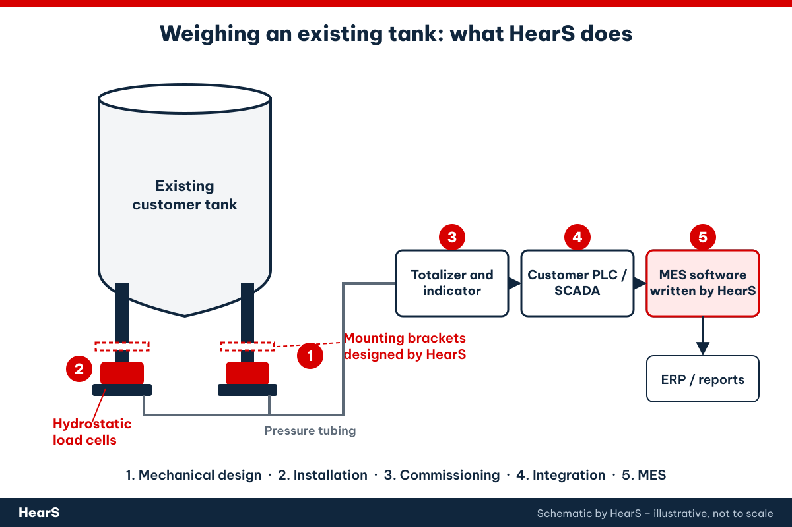
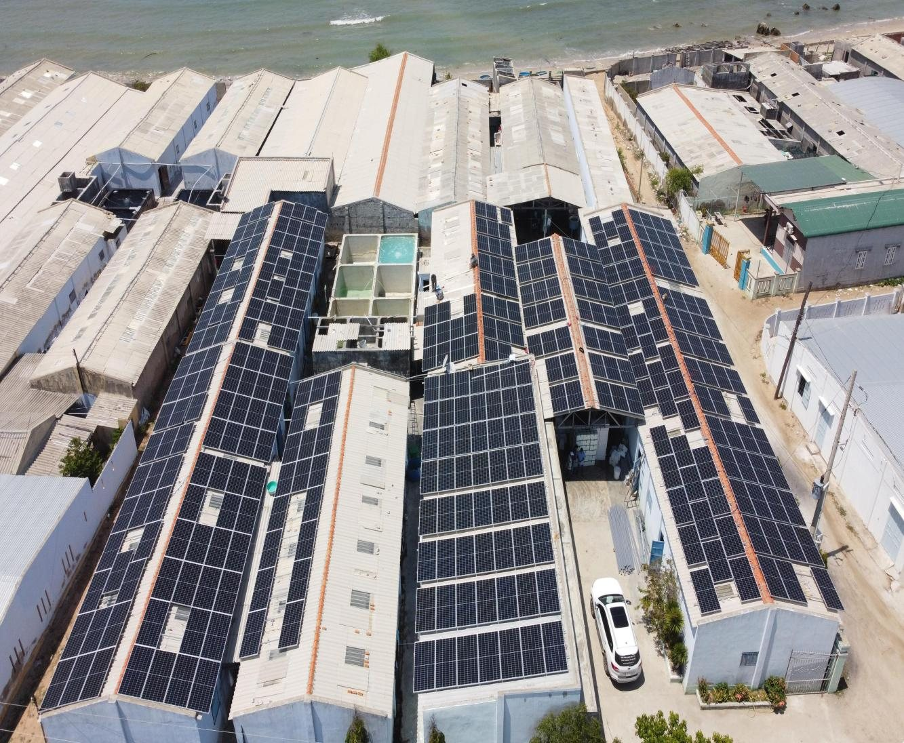

Solar Leader
地上設置アレイ · 1,000 kWp (DC)
Solar Leaderチームが納入。チームがHearSに加わる前のプロジェクトです。
- モジュール
- 2,247 × LONGi 445 W
- インバーター
- 9 × Huawei SUN2000-100KTL-M1
写真をもっと見る (2)


HearS · ソリューション第一 ― グローバル技術をベトナム現地で提供
HearSは産業用過酷環境計量ソリューションを提供します。タンク・サイロ計量、トラック・フロアスケールに、計量部に電子部品を持たないHydrostatic™ 静圧式ロードセルを採用 ― Emery Winslow Scaleの技術を、HearSのエンジニアがベトナムのホーチミン市、ダクラク省、ダナン市で現地調査・設計・設置します。

各ロードセルは荷重を流体圧力に変換します。配管がそれをクリーンルーム内の合算トータライザー（Summing Totalizer）へ伝え、そこで1つの電子信号になります。計量部の水、洗浄、落雷が電子部品に届くことはありません。
“Never Replace Your Load Cells Again!”（ロードセルを二度と交換しない！）
これはEmery Winslow Scaleが自社のHydrostatic™ 静圧式ロードセルに掲げる言葉です ― 水と落雷による損傷に対する生涯保証（“lifetime guarantee against water and lightning damage”、メーカー保証）が裏付けています。HearSが中核とする技術です。

静圧式ロードセルは配管を通して流体圧力として重量をクリーンエリアのトータライザーへ伝えるため、計量現場に電子部品はありません。

1つの計量技術で8つの産業分野 ― 各分野にベトナム向けHearSソリューションページがあります。
HearSは既存のタンクやサイロにロードセルを取り付ける機械構造を設計し、設置・試運転を行い、お客様のPLC、SCADA、ERPと統合し、工場ごとにMESソフトウェアを作成します。
オフグリッド農場飼料サイロ計量：ANDUORとの実現可能性調査。
計量スキャン＆スクラップ：QRコードをスキャンし、貨物を計量して結果を記録 ― 機械別、カテゴリ別、作業者別のスクラップを含みます。
太陽光発電：工場・農場向けのパネル、インバーター、蓄電池 ― オフグリッド計量サイトへの電力供給を含みます。

HearSの計量ソリューションは3層で構成され、各層が下の層では答えられない課題に応えます。
すべての計量をスキャンして記録 ― 貨物のQRコード、品質管理（QC）モジュール、スクラップ報告、金属消費量 ― CCSSのE-Toolsを使用。
計量スキャン＆スクラップ: レイヤー2 ― デジタル層：MES計量部に電子部品を持たないタンク、トラック、フロアスケール。洗浄、浸水、落雷、腐食、危険エリアに対応。HearSはグローバル技術を現地ソリューションとして提供します：ベトナムでの現地調査、機械設計、設置、統合、サポート。
中部高原向けに肥料、植物保護製品、農資用品の相談と供給を行います。主要サプライヤー：Nicotex。新着：同支店のオフグリッド灌漑ソリューションは複数サイトで実証済みで、現在提供中です。農業用ドローンサービスも計画中です。

HearSが取り扱う産業用品と太陽光プロジェクト。
HearS太陽光チームがSolar Leaderブランドで完成させた太陽光プロジェクトで、チームがHearSに加わる前のものです。顧客名は非公開です。
Solar Leader
Solar Leaderチームが納入。チームがHearSに加わる前のプロジェクトです。

Solar Leader
Solar Leaderチームが納入。チームがHearSに加わる前のプロジェクトです。

Solar Leader
Solar Leaderチームが納入。チームがHearSに加わる前のプロジェクトです。

HearSは産業用粘着テープとダイカットソリューションを供給します。

粘着テープ
HearSがベトナムで供給する産業用粘着テープとダイカットソリューション。

チューブ＆スリーブ
HearSがベトナムの産業顧客向けに供給する電気材料。
用途、現場条件、制約をお聞きします。
ソリューションの規模を決め、判断に必要な資料を準備します。
機器を供給し、設置を手配します。
試運転、ご質問、保守計画について継続的に対応します。
用途をお知らせください。メールで返信します。